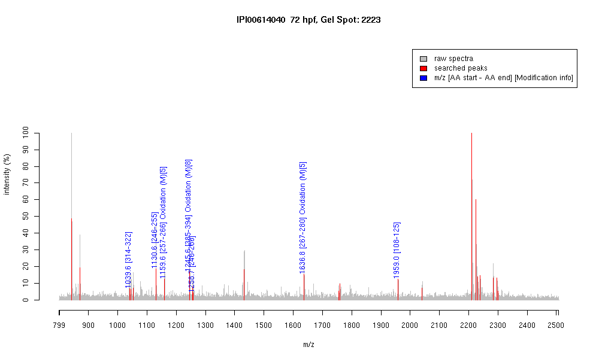

| Name | "PREDICTED: similar to tubulin, beta, 2isoform 2" |
|---|---|
| MW | 50275.2 |
| PI | 4.79 |
| Mascot Protein Score | 86 |
| Masses (matched / unmatched) | 7 / 24 |

| Peptide | MZ (calc) | MZ (observed) | Error (DA) | Error (PPM) | Start | Stop | Modifications |
|---|---|---|---|---|---|---|---|
| YLTVAAVFR | 1039.5935 | 1039.5847 | -0.0088 | -8 | 314 | 322 | |
| FPGQLNADLR | 1130.5953 | 1130.5952 | -0.0001 | 0 | 246 | 255 | |
| LAVNMVPFPR | 1159.6292 | 1159.6257 | -0.0035 | -3 | 257 | 266 | Oxidation (M)[5] |
| ISEQFTAMFR | 1245.5933 | 1245.5885 | -0.0048 | -4 | 385 | 394 | Oxidation (M)[8] |
| FPGQLNADLRK | 1258.6902 | 1258.7012 | 0.011 | 9 | 246 | 256 | |
| LHFFMPGFAPLTSR | 1636.8304 | 1636.8265 | -0.0039 | -2 | 267 | 280 | Oxidation (M)[5] |
| GHYTEGAELVDSVLDVVR | 1958.9817 | 1959.0038 | 0.0221 | 11 | 108 | 125 |